Hortense LOT
Accompagnement au mieux être
Magnétisme et géobiologie
Nettoyage énergétique
Accompagnement des personnes dans la croyance de l’Être et le respect des rêves. Toute ma
vie, j’ai tissé une fibre particulière avec
chacune des personnes rencontrées, portée par l’écoute, la compréhension et un bon sens humain.
Mon parcours a suivi ce fil d’Ariane.
Convaincue que chacun(e) peut trouver sa place, j’ai soutenu des projets personnels et
collectifs au sein d’associations puis d’une
collectivité territoriale. J’ai animé, fédéré, communiqué pour soutenir des personnes en grande
précarité. J’ai étayé le développement
de petites structures locales ainsi que des projets à l’international.
En bref, j’ai actionné des leviers de solidarité.
Un jour, le vent a soufflé un changement de vie et de territoire. J’ai alors posé mes valises
entre Dentelles de Montmirail et Mont Ventoux, pays provençal de mes souvenirs d’enfance.
La vie offre son lot de surprises à qui sait les voir et s’en saisir. Des mains qui fourmillent,
une intuition aiguisée, le développement d’une nouvelle conscience. J’ai abordé le milieu
énergétique en
quête de réponses pour moi-même avant de réaliser que j’avais mes propres compétences Ã
mettre au service des autres. Je me suis d’abord intéressée aux énergies universelles de
guérison, puis je me suis formée à la géobiologie pour harmoniser foyers et lieux de
travail.
Aujourd’hui, j’enrichis régulièrement mon savoir-faire par de nouvelles approches
énergétiques et un partage d’expériences avec d’autres praticiens.
En accord avec mes convictions et dans le respect de la confidentialité, en présentiel ou Ã
distance, je vous accompagne afin de traiter les maux qui vous impactent, vous et votre
environnement.
Hortense
Puis, un jour, le vent a soufflé un changement de vie et de territoire. J’ai quitté la région qui m’avait abritée pendant 30 ans et posé mes valises en Provence, entre Dentelles de Montmirail et Mont Ventoux, pays détenteur de mes souvenirs d’enfance.
La vie offre son lot de surprises à qui sait les voir et s’en saisir. Des mains qui fourmillent, une intuition aiguisée, le développement d’une nouvelle conscience. J’ai abordé le milieu énergétique en quête de réponses pour moi-même avant de réaliser que j’avais mes propres compétences à mettre au service des autres. Je me suis d’abord intéressée aux énergies universelles de guérison. Puis, persuadée que tout individu ne peut être bien avec lui-même qu’en étant bien dans son environnement, je me suis formée à la géobiologie pour harmoniser foyers et lieux de travail.
Aujourd’hui, j’enrichis régulièrement mon savoir-faire par de nouvelles approches énergétiques et un partage d’expériences avec d’autres praticiens.
En accord avec mes convictions et dans le respect de la confidentialité, à distance ou en présentiel, je vous propose un accompagnement afin de traiter les maux qui vous impactent, tant au niveau de votre personne que de votre cadre de vie.
Hortense

radiesthésie
Partons du principe que tout être vivant, végétal ou minéral, dégage une énergie quantifiable.
La radiesthésie est l’aptitude à ressentir les vibrations émises par tous les corps visibles ou invisibles et à les analyser. Le champ énergétique permet de confirmer l’existence des phénomènes invisibles. Le taux vibratoire est alors un baromètre pour établir le niveau énergétique d’une personne ou d’un lieu. Il est un indicateur et pointe un état de fragilité ou de bonne santé. Son évolution positive permet de confirmer les effets bénéfiques d’un soin.
La radiesthésie se pratique avec certains outils. Pour ma part, j’utilise un pendule en soutien de mes propres ressentis corporels. Il est une aide pour mes recherches sur plans, planches, abaques et facilitateur pour la préparation de mes soins. Il me permet de vérifier mes interventions et d’apporter des modifications et améliorations si nécessaire. Je pratique également à l’aide de baguettes lors de travaux de géobiologie pour la localisation des réseaux telluriques ou courants d’eaux souterrains.
géobiologie
« Celui qui veut perfectionner l’art de guérir,
considérera les causes extérieures qui agissent sur l’être vivant... »
Traité des Arts, des Eaux et des Lieux - Hippocrate - 430/415 av. JC.
Votre cadre de vie, un cadre primordial. Votre habitation est votre seconde peau…
Souffrez-vous d’insomnie, de stress ou autres maladies sans en trouver l’origine ? Ressentez-vous un malaise indescriptible dans certains lieux sans en comprendre la cause ? Nous baignons dans une pollution souvent méconnue. Elle est créée naturellement par des remontées de champs magnétiques en raison de la présence, sous nos pieds, de réseaux telluriques, cours d’eau ou autre faille. Elle est aussi artificielle, fruit du développement de notre confort moderne très «connecté».
Les ondes sont partout autour de nous, aériennes, sur ou sous terre. Tout est source de champs magnétiques et électriques générant des dysfonctionnements physiques et psychologiques.
La géobiologie est la médecine de l’habitat. Elle étudie la présence de ces ondes dans notre environnement et leurs conséquences sur l’être humain et, plus largement, le vivant.
Mon travail à distance et/ou en présentiel, consiste à identifier ces phénomènes puis à préconiser et mettre en place des remèdes pour annihiler leurs effets. La finalité est de relever la qualité vibratoire de vos lieux de vie favorisant ainsi votre épanouissement dans un environnement sain.


nettoyage énergétique
Chacun sait que les murs ont des oreilles. Si ceux-ci pouvaient parler, ils nous conteraient la mémoire des lieux et votre histoire personnelle. Votre histoire est peut-être d’ailleurs engluée dans des problématiques familiales ou professionnelles ainsi que des problèmes de santé récurrents. Ces parcours nous font avouer que la vie n’est pas un long fleuve tranquille mettant haut la barre pour atteindre des horizons plus paisibles.
Ils sont sources d’enseignement. Alors, faut-il aussi comprendre que nous traînons quelques fardeaux d’une histoire qui nous dépasse ?
En fait, nous subissons la présence d’énergies basses altérant la qualité de notre quotidien. Ces phénomènes peuvent aussi bien impacter les lieux que les êtres vivants. Quelles qu’en soient les origines, il est essentiel de procéder à la libération de ces manifestations énergétiques afin de retrouver plein potentiel, équilibre intérieur et harmonie sur les différents plans de notre existence.
M’accompagnant de la radiesthésie, je recherche les raisons de vos blocages, puis je travaille à l’élimination de ces énergies basses entravant votre vie. Cette intervention favorise très souvent l’accélération des soins qui s’ensuivent.
chromothérapie
Peu pratiquée en France, la chromothérapie est cependant reconnue depuis les années 1980 grâce au Dr. Christian Agrapart, docteur en médecine, neuropsychiatre et acupuncteur. Les études ont permis de confirmer les bienfaits des couleurs sur l’organisme. Méthode naturelle, elle vise l’harmonisation physique, psychique et émotionnelle grâce à la projection de lumières colorées sur le corps. Le cercle chromatique référence une douzaine de couleurs avec des effets spécifiques qui peuvent être ainsi utilisées à des fins thérapeutiques. Le langage des couleurs rentre au service de la santé pour tous : primaires et secondaires, chaudes et froides, utilisées seules ou en accord avec d’autres.
Je travaille avec une lampe LED à laquelle j’ajoute des filtres de couleur en réponse aux fragilités décelées. Les faisceaux lumineux sont alors projetés sur une zone corporelle. Le soin peut également s’effectuer en « bain de couleur » lorsque la problématique est d’ordre plus global comme un désordre occasionné par du stress. Les couleurs - choisies en fonction de la pathologie - sont alors dispensées sur l’ensemble du corps.

tambour chamanique
« Le corps est le jardin de l’âme
Soigne le avec Amour et ton esprit fleurira »
Lors de ma quête personnelle, les cercles de tambours m’ont permis de privilégier le langage de mon corps en laissant le cérébral de côté. Ce corps avait déjà beaucoup souffert, sans compréhension des messages qui m’étaient adressés. Il aura fallu la vibration du tambour pour que j’accorde à mon enveloppe terrestre l’oreille indispensable à la compréhension de ces maux. « C’est pourtant si simple de ne pas souffrir » me suis-je entendu dire alors de je revenais d’un «voyage» pendant lequel j’avais ressenti mon corps de plomb s’enfoncer sans ménagement dans le carrelage froid de la salle qui nous accueillait.
Il est dit que c’est le tambour qui vous appelle. Ce fut une évidence et j’ai répondu à cet appel. D’abord, par sa fabrication, ensuite par son utilisation régulière. Il est ma continuité, et sans aucun doute démultiplicateur de puissance lors de séances de nettoyage et de soins énergétiques.

L’accompagnement au mieux-être
Personnes, animaux, lieux
Raconter une séance de soin n’a pas beaucoup de sens pour moi car il n’y a pas un type
d’intervention ou un seul protocole d’aide énergétique. Il s’agit plutôt de vous proposer mes
compétences à adopter en fonction de ce que vous êtes, de votre histoire et de vos maux.
Vous entendre. Notre premier échange est la base de l’accompagnement. La raison de votre prise de
contact est l’entrée en matière. Cependant, au-delà d’un corps en souffrance ou d’un mal-être se
cache votre histoire qui m’indique comment vous aider, vous et votre environnement.
La suite relève de pratiques qui ne dépendent jamais d’un cadre établi. Rien de mystérieux mais
plutôt une alchimie d’idées qui me pousse à travailler plutôt d’une manière que d’une autre. Une
recherche et une validation en radiesthésie. Des ingrédients et l’élaboration de ce qui sera la
meilleure solution pour votre mieux être.
Rien n’est jamais acquis. Certaines situations seront réglées en une fois. D’autres demanderont
plus d’investigations et de patience. Il est dit que le corps est perclus de douleurs et que les
murs de votre habitation résonnent d’histoires qui peuvent entacher la vôtre. Des cicatrices
visibles en surface et des mémoires qui remontent comme des silex d’un champ fraîchement
labouré.
Mon intention est l’amélioration de votre vie et je crois en la possibilité de vous accompagner.
les échos
Françoise M. Psychanalyste retraitée, Hérault (34)
«Je souffre de bouffées de chaleur diurnes et nocturnes depuis des années. Faute de
solutions
pour
limiter cet handicap
quotidien, j’ai fait appel à Hortense grâce à une relation commune. Je n'avais jamais
vraiment
eu
l'idée de me tourner
vers ce type de soins. A distance, nous avons établi la communication nécessaire à une
connaissance
qui est devenue
rapidement une relation de confiance. Ses soins m'ont apporté un mieux-être et m'ont
réellement
soulagée au-delà de tous
les traitements médicaux essayés auparavant. Le nombre de bouffées est tombé de 15 à 5 par
jour,
parfois moins.
Je dois dire que mon parcours professionnel de psy ne me destinait pas à une croyance d'un
tel
pouvoir mais l'approche
naturelle et sincère d'Hortense m'a rapidement convaincue. Depuis 10 mois maintenant, je
fais
appel
à ses services pour
d'autres soucis de santé. Ses soins sont complémentaires des séances de kiné ou autres.
C'est un véritable plus pour l’atténuation de mes douleurs chroniques et mon confort de
vie.»
Morgane L. Infirmière - Haute-Garonne (31).
«Mon petit garçon de 4 ans souffre d'asthme lorsqu'il attrape un virus. Suite à des hospitalisations en urgence, j'ai fait appel à Hortense deux fois. J'ai pu constater 24h après les soins une diminution des symptômes (nez moins bouché, qui arrête de couler, moins de toux, moins de sifflement) et surtout un sommeil plus constant et plus réparateur. 3 jours plus tard, il pétait la forme.»
Fabio C. Je vis au Pays Basque (64) et je suis artiste peintre.
«J'ai rencontré Madame Hortense suite aux conseils d’une amie qui s’intéresse au monde des énergies. Mon expérience avec Madame Hortense fut magnifique ayant tant de problèmes à régler, familiaux et physiques. Madame Hortense a su détecter mes soucis et SURTOUT les résoudre. J’étais un vrai chantier mais tout cela n'est qu'un vieux souvenir. Après deux séances, tout s’est réglé. J'ai une grande reconnaissance pour Madame Hortense. La lumière est arrivée enfin dans ma vie 🙏🙏🙏🙏 . Mille mercis et plein de reconnaissance. Cordialement, Fabio»
Ghislaine H. Conseillère bancaire - Landes (40)
«Je souffrais depuis des années d’une douleur intense et cristallisée dans le bas de l’omoplate, qui perturbait parfois ma respiration (diaphragme bloqué). J’ai eu la chance de rencontrer Hortense Lot (séances par téléphone et en présentiel ). Par son approche et ses compétences multiples (j’ai été très réceptive aux séances avec le tambour), elle a réussi à me soulager jusqu’à faire disparaître cette douleur récurrente. Mille merci Hortense !»
Catherine B. Coach à Paris (75)
« J'ai fait appel à Hortense car j'avais une douleur très particulière depuis plusieurs années, comme une sorte de grille forgée dans mon dos .. Quelque chose d'aigu qui se manifestait dès que je bougeais les deux épaules vers l'avant en même temps. Les séances de kiné ou d'ostéo n'y faisaient rien. Dès la 1ère séance avec Hortense, j'ai senti une libération, comme si la grille avait été soulevée. La 3ème séance a été la bonne ! Cela fait maintenant presque 6 mois et la douleur n’est jamais revenue. Un immense merci à toi Hortense 🙠»
Marion A. Conseillère Emploi, Pyrénées-Atlantiques (64)
«Une famille recomposée, un déménagement, une maison pleine d'histoires... Pourtant, l'expérience aurait pu mal tourner. Une humidité importante est rapidement apparue. Rien d'étonnant avec les vieux murs, mais au moment des beaux-jours, ce n'était pas prévu. Hortense a repéré plusieurs voies d'eau qui circulent sous la maison. Son intervention a permis d'endiguer la montée de cette humidité. Rapidement, nous avons été rassurés. Nous avons depuis fait le nécessaire pour limiter l'apport d'eau sous la maison. Ce sera long, mais nous en voyons déjà les effets : l'air est plus sain, le linge ne sent plus l'humidité, peu à peu les joints du carrelage sèchent. Nous abordons l'hiver sereins. Un grand merci à Hortense pour son intervention qui a rapidement solutionné le problème. Sans son aide, ça aurait été la panique. A un mois de l'emménagement, ça n'avait rien de rassurant. Après un nettoyage des lieux, nous inscrivons nous aussi notre histoire dans cette maison et la famille s'agrandit...»
Jean-François B. Cadre dans la fonction publique – Pyrénées-Atlantiques (64)
« Je souffre de douleurs chroniques du dos depuis plus de 25 ans. Suite à 2 opérations pour hernie discale, j'alterne les périodes de douleurs lombaires et de répit. En avril dernier, j'ai fait une chute qui m'a causé des douleurs pendant 3 à 4 mois pratiquement sans interruption. L'intervention d'Hortense s'est traduit, en seulement 3-4 jours, par un arrêt total de mes douleurs. Ce qui m'a encore plus surpris, c'est que je me suis rapidement senti plus confiant dans les capacités de mon dos, et que je n'ai plus d'appréhension à faire certains gestes. Je me sens libéré !»
Bernadette B. Vigneronne retraitée. Vaucluse (84)
«Madame Lot m’a soignée car j’ai fait plusieurs mauvaises chutes… C’est une soignante très compétente et aussi hypersensible et très humaine.»
Chloée R. Vidéaste. Côte d’Armor (22)
« Merci Hortense. Tu es arrivée avec un synchronisme parfait. J'étais complètement désalignée, je me sentais oppressée, bloquée. Tu es intervenue dans la maison et m'as fait un soin qui m'a fait un bien fou. Je me suis sentie apaisée, calme et plus confiante. Les choses commencent à s'animer autour de moi. Même si c'est petit, je sens vraiment le changement.»
Stéphanie B. Chargée de mission / fonction publique territoriale (64)
« Mon chat Garfield 14 ans, atteint d’un cancer, ne pouvait plus s’alimenter sans vomir avec la prise de son traitement chimio. Il perdait beaucoup de poids, les soins à distance d’Hortense ont permis de stopper les vomissements en quelques heures à chacun de ses soins. Aujourd’hui il va bien et il a retrouvé son poids de forme. Encore merci Hortense pour cette aide complémentaire et précieuse à son traitement vétérinaire. Disponible, à l’écoute et réactive je recommande les soins d’Hortense 😊 »
Béatrice Dacher, thérapeute en énergétique dans les Hautes Alpes
« J'ai fait appel à Hortense en urgence, car oui l'énergétique fonctionne très bien à distance ! Hortense a été très réactive et a permis de désamorcer une situation compliquée. Elle saura vous dire si des choses embêtent votre habitat ou vous même et les enlever. Je recommande Hortense aussi pour sa bienveillance »
Nadine
« J'ai fait appel à Hortense pour des douleurs physiques et grâce à ses soins à distance, non seulement les douleurs ont quasiment disparu mais surtout elle a levé des nœuds énergétiques transgénérationnels que je connaissais intellectuellement mais qu'elle a libérés. Merci Hortense !🥀 »
les tarifs présentiel ou distanciel
Soins à la personne:
60€- Rendez-vous téléphonique et soin Tarif étudié si accompagnement long
Soins aux animaux:
40€
Soin aux lieux:
Nettoyage énergétique : 100€
Géobiologie : 250€, nettoyage énergétique inclus
Tel:
06.26.13.14.25
Mail:
hlot@mailo.com
SIRET:
980525190 00016